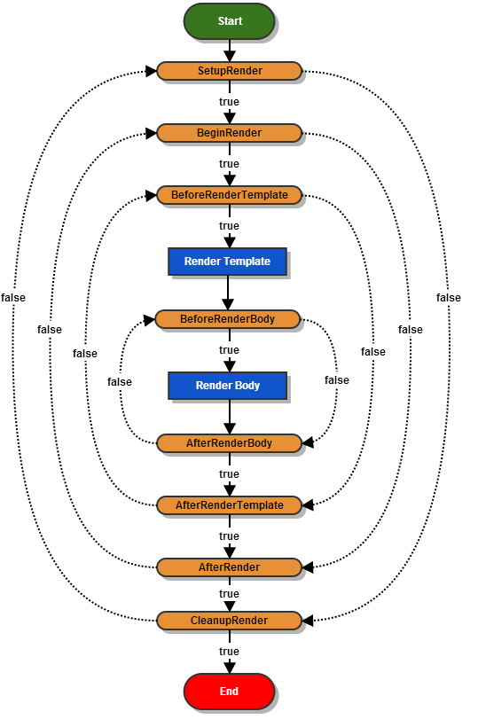

Component Rendering
Rendering of components in Tapestry 5 is based on a state machine and a queue (instead of the tail recursion used in Tapestry 4). This breaks the rendering process up into tiny pieces that can easily be implemented or overridden. Don’t worry, in practice, writing components requires a breathtakingly small amount of code.
Rendering Phases
The rendering of each component is divided into a number of phases, illustrated below.

Each of the orange phases (SetupRender, BeginRender, BeforeRenderBody, etc.) corresponds to an annotation you may place on one or more methods of your class. The annotation directs Tapestry to invoke your method as part of that phase.
Methods marked with these annotations are called render phase methods.
Your methods may be void, or return a boolean value.
Returning a value can force phases to be skipped, or even be re-visited.
In the diagram, solid lines show the normal processing path.
Dashed lines are alternate flows that are triggered when your render phase methods return false instead of true (or void).
Render phase methods may take no parameters, or may take a parameter of type MarkupWriter. The methods can have any visibility you like … typically, package private is used, as this visibility makes it possible to unit test your code (from within the same Java package) without making the methods part of the component’s public API.
All Render phase methods are optional; a default behavior is associated with each phase.
| Annotation | Method Name | When Called |
|---|---|---|
|
|
When initial setup actions, if any, are needed |
|
|
When Tapestry is ready for the component’s start tag, if any, to be rendered |
|
|
Before Tapestry renders the component’s template, if any |
|
|
Before Tapestry renders the body of the component, if any |
|
|
After Tapestry renders the body of the component, if any, but before the rest of the component’s template is rendered |
|
|
After Tapestry finishes rendering the component’s template, if any |
|
|
After Tapestry has finished rendering both the template and body of the component |
|
|
When final cleanup actions, if any, are needed |
The large number of phases reflects the need for precise control of components from Component Mixins. Several of the phases exist almost exclusively for mixins.
Generally, your code will use the SetupRender, BeginRender, AfterRender and CleanupRender phases … often just one or two of those.
An Example
Here’s the source for a looping component that counts up or down between two values, renders its body a number of times, and stores the current index value in a parameter:
package org.example.app.components;
import org.apache.tapestry5.annotations.Parameter;
import org.apache.tapestry5.annotations.AfterRender;
import org.apache.tapestry5.annotations.SetupRender;
public class Count
{
@Parameter
private int start = 1;
@Parameter(required = true)
private int end;
@Parameter
private int value;
private boolean increment;
@SetupRender
void initializeValue()
{
value = start;
increment = start < end;
}
@AfterRender
boolean next()
{
if (increment)
{
int newValue = value + 1;
if (newValue <= end)
{
value = newValue;
return false; (1)
}
}
else
{
int newValue = value - 1;
if (newValue >= end)
{
value = newValue;
return false;
}
}
return true; (2)
}
}| 1 | Returning false from next() causes Tapestry to re-run the BeginRender phase, and from there, re-render the component’s body (this component does not have a template). |
| 2 | Returning true transitions to the CleanupRender phase. |
Notice how Tapestry adapts to your methods, as marked with the annotations. It also adapts in terms of parameters; the two annotated methods here did not perform any output, so they did not need a MarkupWriter.
What’s really mind blowing is that the template and body of a component will often contain … more components! That means that many different components will be in different phases of their own state machine.
Render Phases in Detail
- NOTE
-
The SetupRender phase, like all render phases, occurs once for each rendering of the component. If the component is inside a looping component (Loop, Grid, etc.), then the SetupRender method will be called once for each iteration of the loop.
SetupRender
The SetupRender phase (see @SetupRender) is where you can perform any one-time per-render setup for your component. This is a good place to read component parameters and use them to set temporary instance variables.
BeginRender
The BeginRender phase (see @BeginRender) occurs at the start of the rendering of the component. For components that render a tag, the start tag should be rendered here (the close tag should be rendered inside the AfterRender phase). The component can also prevent the template and/or body from being rendered by returning false.
Components may or may not have a template.
If a component has a template, and the template includes a <body> element, then the BeforeRenderBody phase will be triggered (giving the component the option of rendering its body or not).
If a component does not have a <body> element in its template, then the BeforeRenderBody phase is not triggered.
If a component does not have a template, but does have a body, the BeforeRenderBody phase is still triggered.
If no methods are annotated with BeginRender, then no special output occurs during this phase, but the template (if present) or body (if no template is present, but the component has a body) will be rendered.
BeforeRenderTemplate
The BeforeRenderTemplate phase (see @BeforeRenderTemplate) exists to allow a component to decorate its template (creating markup around the template generated markup), or to allow a component to skip its template.
BeforeRenderBody
The BeforeRenderBody phase (see @BeforeRenderBody) is associated with a component’s body (the portion of its container’s template that the component occupies). The BeforeRenderBody phase allows the component the ability to skip the body, while still rendering the rest of the component’s template (if any).
If no methods are annotated with BeforeRenderBody, then the body will be rendered by default. Again, this occurs when the <body> element of the component’s template is reached, or automatically if the component has no template (but the component does have a body).
AfterRenderBody
The AfterRenderBody phase (see @AfterRenderBody) is executed after the body is rendered; this only occurs for components with a body.
AfterRender
The AfterRender phase (see @AfterRender) complements BeginRender, and is often used to render the close tag that matches the start tag rendered in the BeginRender phase. In any case, the AfterRender phase can continue on to CleanupRender, or revert back to BeginRender (as in our Count component example, above).
If no methods are annotated with AfterRender, then no special output occurs, and the CleanupRender phase is triggered.
Using Method Names instead of Annotations
If you prefer to avoid using annotations on your methods, you may do so by providing specific names for your methods.
The required method name is the annotation name, with the first character decapitalized: setupRender(), beginRender(), etc.
As with annotated render phase methods, Tapestry is flexible about visibility, return type and parameters.
Using this mechanism, the earlier example can be rewritten as:
package org.example.app.components;
import org.apache.tapestry5.annotations.Parameter;
public class Count
{
@Parameter
private int start = 1;
@Parameter(required = true)
private int end;
@Parameter
private int value;
private boolean increment;
void setupRender()
{
value = start;
increment = start < end;
}
boolean afterRender()
{
if (increment)
{
int newValue = value + 1;
if (newValue <= end)
{
value = newValue;
return false;
}
}
else
{
int newValue = value - 1;
if (newValue >= end)
{
value = newValue;
return false;
}
}
return true;
}
}This style is a trade off: on the gain side, the code is even simpler and shorter, and the method names will, by design, be more consistent from one class to the next. The down side is that the names are very generic, and may in some cases, be less descriptive than using annotated methods (initializeValue() and next() are, to some eyes, more descriptive).
You can, of course, mix and match, using specifically named render phase methods in some cases, and annotated render phase methods in other cases.
Rendering Components
Instead of returning true or false, a render phase method may return a component.
The component may have been injected via the @Component annotation, or may have been passed to the owning component as a parameter.
In any case, returning a component will queue that component to be rendered before the active component continues rendering.
The component to render may even be from a completely different page of the application.
Recursive rendering of components is not allowed.
This technique allows the rendering of Tapestry pages to be highly dynamic.
Returning a component instance does not short circuit method invocation (as described below), the way returning a boolean would. It is possible that multiple methods may return components (this is not advised – insanity may ensue).
Additional Return Types
Render phase methods may also return Blocks, Renderables or RenderCommands.
The following component returns a Renderable in the BeginRender phase and skips the BeforeRenderTemplate phase:
public class OutputValueComponent
{
@Parameter
private String value;
Object beginRender()
{
return new Renderable()
{
public void render(MarkupWriter writer)
{
writer.write(value);
}
};
}
}Short Circuiting
If a method returns a true or false value, this will short circuit processing.
Other methods within the phase that would ordinarily be invoked will not be invoked.
Most render phase methods should return void, to avoid unintentionally short circuiting other methods for the same phase.
Method Conflicts and Ordering
It is possible to have multiple methods that are annotated with the same render phase annotation. This may include methods in the same class, or a mix of method defined in a class and inherited from other classes.
Mixins Before Component
When a component has mixins, then the mixins' render phase methods execute before the component’s render phase methods. If a mixin extends from a base class, the mixin’s parent class methods execute before the mixin subclass' render phase methods.
Exception: Mixins whose class is annotated with @MixinAfter are ordered after the component, not before.
The order in which the mixins of a given class (@MixinAfter or mixins before) execute is determined by the ordering constraints specified for the mixins. If no constraints are provided, the order is undefined. See Component Mixins for more details.
Parents before Child
Ordering is always parent-first. Methods defined in the parent class are always invoked before methods defined in the child class.
When a sub-class overrides an render phase method of a base class, the method is only invoked once, along with any other base class methods. The subclass can change the implementation of the base class method via an override, but can’t change the timing of when that method is invoked. See (TAPESTRY-2311.
Reverse Ordering for AfterXXX and CleanupRender
The After_XXX_ phases exists to balance the Begin_XXX_ and Before_XXX_ phases. Often elements will be started inside an earlier phase and then the elements will be ended (closed) inside the corresponding After_XXX_ phase (with the body and template of the component rendering between).
In order to ensure that operations occur in the correct, and natural order, the render phase methods for these two stages are invoked in reverse order:
-
Subclass methods
-
Parent class methods
-
Mixin subclass methods
-
Mixin parent class methods
Within a Single Class
Currently, rendering methods having the same annotation within a single class are executed in alphabetical order by method name. Methods with the same name are ordered by number of parameters. Even so, annotating multiple methods with the same rendering phase is not a great idea. Instead, just define one method, and have it call the other methods in the order you desire.
Rendering Comments
Starting with version 5.3, Tapestry can optionally emit rendering comments for all requests; these are comments such as <!--BEGIN Index:loop (context:Index.tml, line 15)-→ that can assist you in debugging markup output on the client-side.
This will significantly increase the size of the rendered markup, but can be very helpful with complex layouts to determine which component was responsible for which portion of the rendered page.
Rendering comments are only available when not running in production mode.
To turn on rendering comments for all requests, set the tapestry.component-render-tracing-enabled configuration symbol to "true".
To turn on rendering comments only for a particular request, add the query parameter t:component-trace=true to the URL: